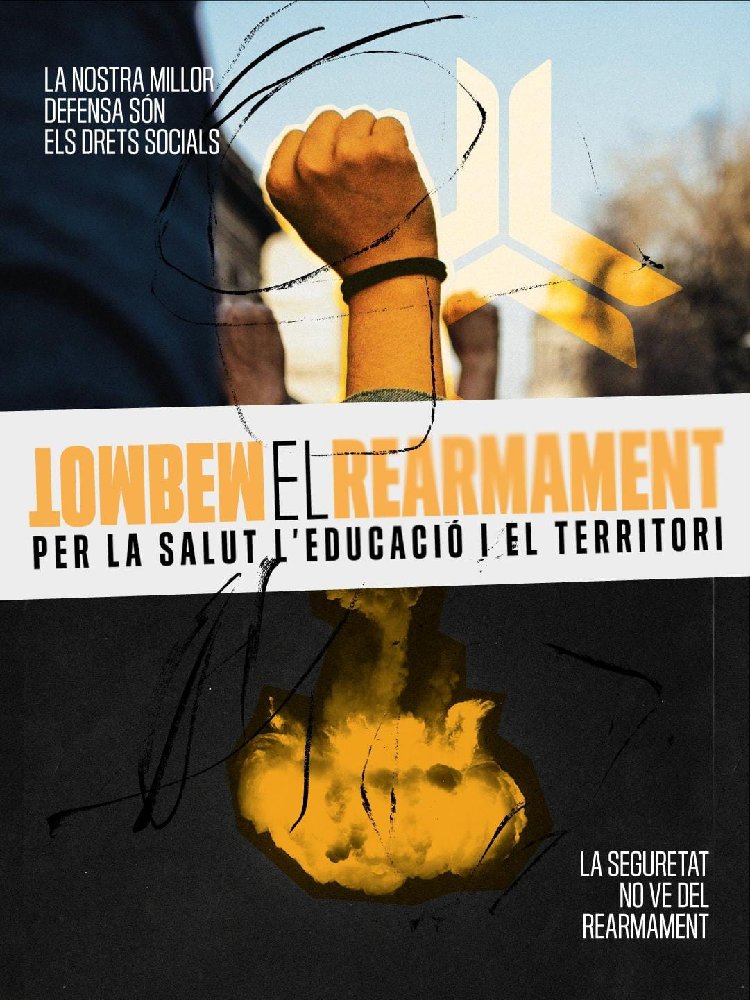

Palestina és la causa de la humanitat. El genocidi que pateix el poble palestí no és un fet aïllat, sinó la cara més cruel d’un sistema on el benefici està per sobre de la vida. Els estats capitalistes han accelerat la seva pugna per repartir-se el món. Des del projecte neocolonial immobiliari per Gaza de Trump fins a l’agressió contra Veneçuela a la recerca de petroli. La guerra contra l’Iran per imposar un govern sotmès al seus interessos n’és l’última expressió.
Les complicitats són directes i tenen nom i cognom. Els bancs com el Santander, BBVA o CaixaBank financen la indústria militar darrera del genocidi alhora que especulen amb l’habitatge. La multinacional ICL, que proveeix el fòsfor blanc emprat en bombes israelianes, és la mateixa que contamina les nostres aigües. Mentre els governs imperialistes apugen els pressupostos militars, retallen sanitat, educació i transport. En el cas de l’Estat espanyol, els darrers governs de coalició han compromès més de 60.000 milions d’euros en despesa militar a través del Consell de Ministres. No podem acceptar la presència de les bases de Rota i Morón ni els compromisos amb l'OTAN que, a més de posar-nos en perill, impliquen ser còmplices d'agressions imperialistes. Ens venen "seguretat" amb més armes, però la nostra inseguretat real són les llistes d’espera, els salaris de misèria, els desnonaments i la crisi climàtica. Necessitem més recursos per una educació i sanitat públiques i de qualitat, no bombes i fronteres dirigides contra els pobles més oprimits. En aquest marc, l’extrema dreta és el màxim exponent de la reacció que creix sobre el malestar, dividint-nos i enfrontant-nos.
En aquest context, amb la sortida de la Global Sumud Flotilla cap a Gaza, reafirmem que la solidaritat no és només un sentiment, sinó una acció material. Davant la complicitat dels governs, només podem confiar en la força del poble organitzat a cada barri, cada centre d’estudi i de treball. Per això, cridem a mobilitzar-nos des de baix per dir alt i clar:
Som treballadores, estudiants i veïnes. Som part de la comunitat educativa en lluita. Nosaltres movem el món cada dia. Nosaltres ens mobilitzarem per aturar la maquinària de la guerra. Perquè la defensa que es persegueix amb l’augment de la despesa armamentística és la dels negocis de les grans empreses arreu del món. Per això, des d’aquí diem: en defensa de la salut, l’educació i el territori, tombem el rearmament!
Centre Delàs d’Estudis per la Pau
Novact
FundiPau
Unitat Contra el Feixisme i el Racisme
Global Sumud Catalunya
Coalició Prou Complicitat amb Israel
Plataforma Desmilitaritzem l'Educació de Catalunya
Boicot ICL
IAC- Intersindical Alternativa de Catalunya
Coordinadora Obrera Sindical (COS)
Sindicat d'Estudiants dels Països Catalans (SEPC)
Sindicat de Llogateres
Confederació Sindical d'Habitatge de Catalunya - COSHAC
Arran
Contracorrent
Obrir Escletxa
Boicot Carrefour
Rebel·lió i Extinció BCN
Ecologistes en Acció de Catalunya
Corrent Revoluciorari de Treballadors i Treballadores (CRT)
Anticapitalistes
Marx21.net
Comitè de Solidaritat de Nou Barris amb Palestina
Comitè de Solidaritat amb Palestina de Sants
Feministes del Poble Sec
Dones x Dones - Ca la Dona
Ateneu del Clot
Col.lectiu pels Drets Humans a Palestina, d'Alella
Maresme amb Palestina - BDS
Assemblea del Clot-Camp de l’Arpa
La Zitzània Ateneu Llibertari
PSUC Viu
JSUC
L'Hospitalet amb el poble palestí
Terrassa amb Palestina
Cuineres per la Pau
Vall de Can Masdeu
Associació Acció Solidària Selva
Associació Entrepobles
En la Mira
Vegansxpalestine
Ras Al Hanout Asociacion
Escoleta Maan Yad f Yad
Associació Cultural Nou Barris Taller d' Idees
Mujeres Brasileñas Contra el Racismo y el Fascismo
Pa i Roses
Teatracció
Nexes Interculturals
Grup de suport con vos
Bidó de Nou Barris
EduAlter (Educació Alternativa)
Sanitàries per Palestina
Assemblea Atzagaia
Huacal, ONG de solidaritat amb El Salvador
Comitè de Solidaritat amb Palestina de Mataró
Associació Feminista Mandràgora de Canet de Mar